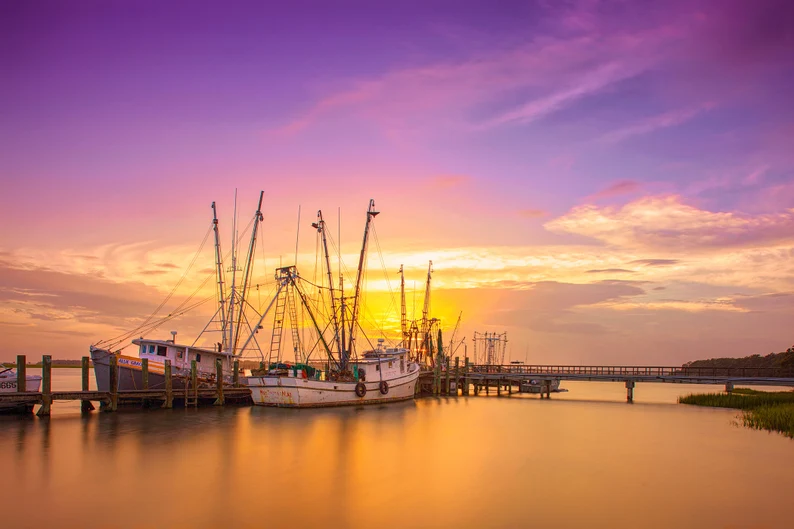
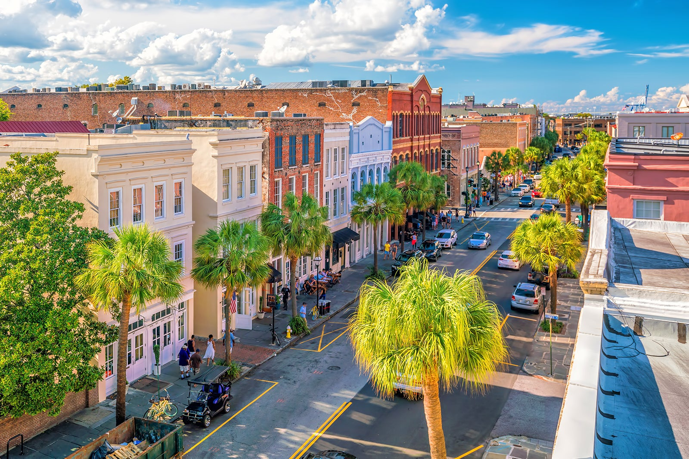

A Coastal Culinary Dream
Charleston is a food lover’s dream, boasting a diverse dining scene that includes everything from traditional Southern fare to modern cuisine.Charleston, South Carolina, offers a vibrant dining scene that reflects its rich culinary heritage and innovative spirit. Visitors can indulge in a variety of options, from traditional Southern fare at iconic restaurants to contemporary dishes crafted by award-winning chefs. Seafood lovers will find plenty to savor, with fresh catches featured prominently on menus, including famous Lowcountry classics like she-crab soup and fried catfish. The city also boasts a thriving farm-to-table movement, emphasizing locally sourced ingredients. Speaking of local, the shrimping industry is alive and well in the Holy City, boasting loads of fresh shrimp to satisfy your shrimp and grits hankering.
Nightlife Fit For Kings and Queens
When the sun sets, Charleston’s nightlife comes alive, with an array of cozy bars, lively music venues, and rooftop lounges offering stunning views of the city. Visitors can enjoy everything from craft cocktails and local brews to live music and dancing, creating a dynamic atmosphere that perfectly complements Charleston’s charming streets and historic ambiance. Whether dining al fresco or enjoying a night out on the town, Charleston’s culinary and nightlife offerings ensure a memorable experience. King Street is the heartbeat of Charleston's nightlife, offering a lively mix of bars, restaurants, and entertainment options that cater to diverse tastes. As the sun sets, the street transforms into a bustling scene where locals and visitors alike flock to enjoy craft cocktails, local brews, and innovative dishes in its eclectic array of establishments. Trendy rooftop bars provide stunning views of the historic skyline, while intimate taverns and upscale lounges offer cozy spots for conversation. Live music venues frequently showcase local talent, from jazz and blues to indie bands, enhancing the vibrant atmosphere. King Street’s dynamic nightlife is not just about drinking; it also features late-night eateries serving up everything from gourmet snacks to sweet treats, making it a perfect destination for an unforgettable night out in Charleston.
